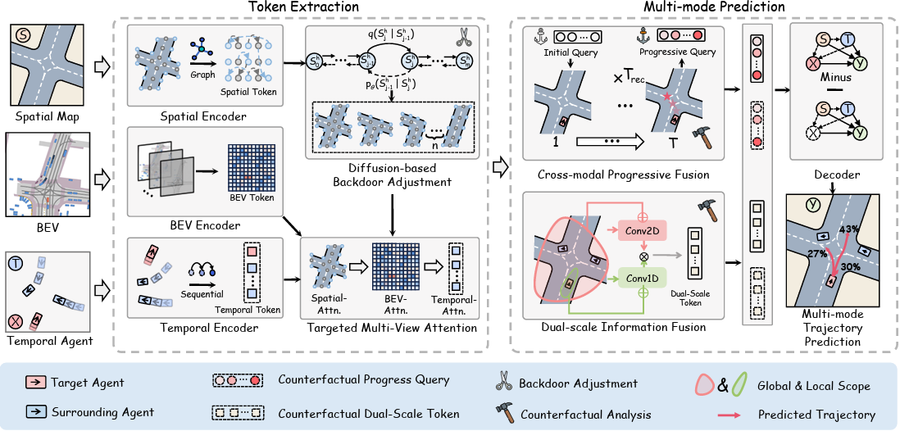
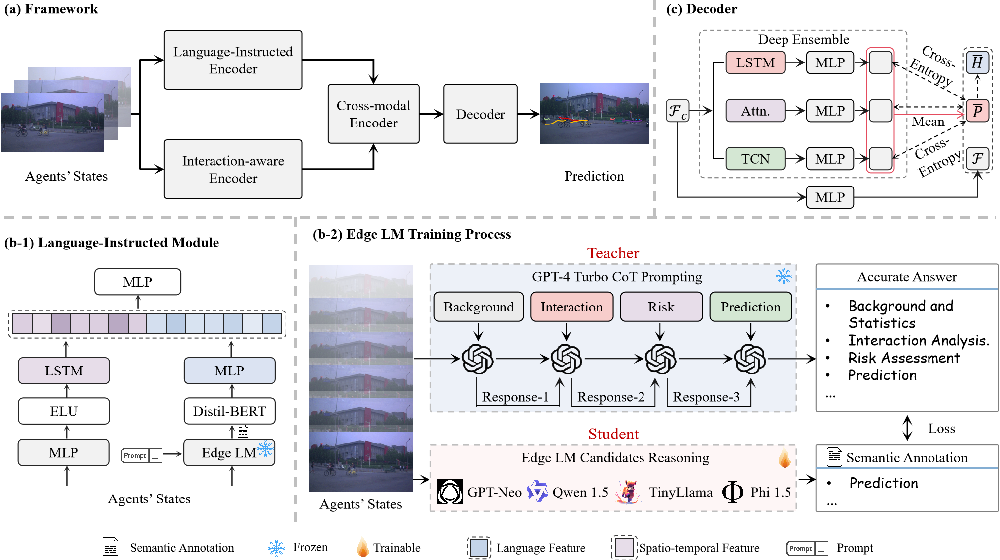
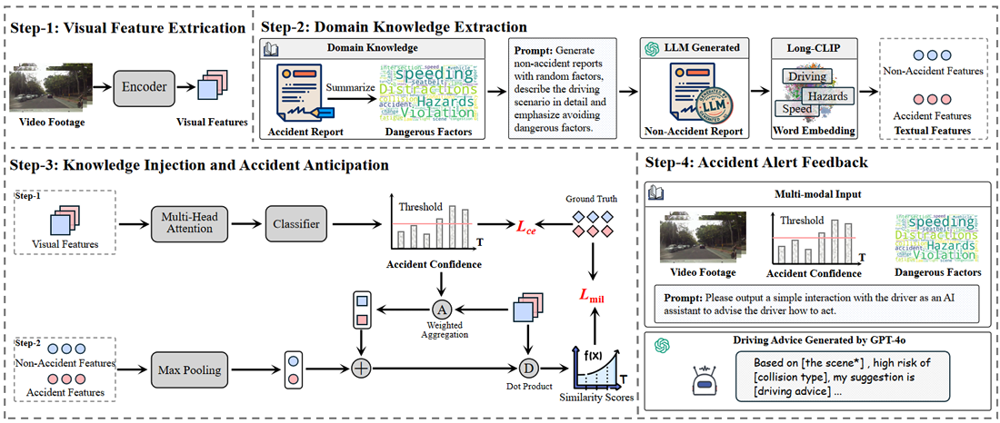
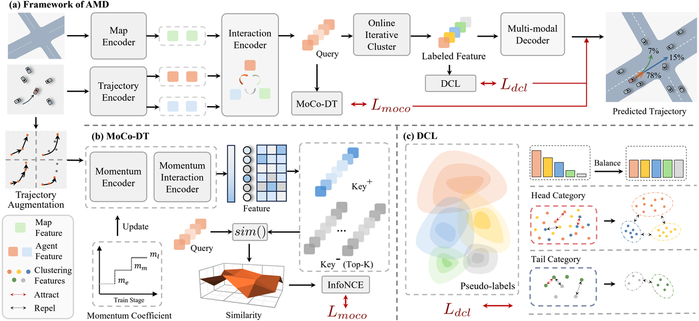

Bonan WangEmail | Linkedin | Google Scholar | WeChat |
{kind=link}
👋 Here is Bonan Wang. I am currently a second-year master student major in Computer Science at State Key Laboratory of Internet of Things for Smart City (SKL-IOTSC),University of Macau. I am a research assistant in Human Lab advised by Prof. Zhenning Li. Before that, I received my Bachelor’s degree of Science in Mathematics with the School of Mathematics & Data Science, Shaanxi University of Science & Technology.
Education
-
Univeristy of MacauM.S in Computer Science08/2023-10/2025
-
Shaanxi University of Science & TechnologyB.S in Data Science and Big Data Technology ( Mathematics )09/2019-06/2023
Selected Publications
|

Beyond Patterns: Harnessing Causal Logic for Autonomous Driving Trajectory Prediction.
Bonan Wang, Haicheng Liao,Chengyue Wang, Bin Rao, Yanchen Guan, Guyang Yu, Jiaxun Zhang, Songning Lai, Chengzhong Xu and Zhenning Li International Joint Conference on Artificial Intelligence (IJCAI), 2025 |
|

Addressing Corner Cases in Autonomous Driving: A World Model-based Approach with Mixture of Experts and LLMs.
Haicheng Liao*, Bonan Wang*, Junxian Yang, Chengyue Wang, Zhengbing He, Guohui Zhang, Chengzhong Xu and Zhenning Li Transportation Research Part C: Emerging Technologies (TR Part C, minor revision), 2025 |
|

NEST: A Neuromodulated Small-world Hypergraph Trajectory Prediction Model for Autonomous Driving.
Chengyue Wang*, Haicheng Liao*, Bonan Wang, Yanchen Guan, Bin Rao, Ziyuan Pu, Zhiyong Cui, Chengzhong Xu and Zhenning Li The 39th Annual AAAI Conference on Artificial Intelligence (AAAI oral), 2025 |
|
|

Cot-drive: Efficient motion forecasting for autonomous driving with llms and chain-of-thought prompting.
Haicheng Liao*, Hanlin Kong*, Bonan Wang, Chengyue Wang, Wang Ye, Zhengbing He, Chengzhong Xu and Zhenning Li IEEE Transactions on Artificial Intelligence (T-AI), 2025 |
|
|

A Domain-Enhanced Dual-Branch Model for Efficient and Interpretable Accident Anticipation.
Yanchen Guan, Haicheng Liao, Chengyue Wang, Bonan Wang, Jiaxun Zhang, Jia Hu and Zhenning Li Communications in Transportation Research, 2025 |
|
|

AMD: Adaptive Momentum and Decoupled Contrastive Learning Framework for Robust Long-Tail Trajectory Prediction.
Bin Rao, Haicheng Liao, Yanchen Guan, Chengyue Wang, Bonan Wang, Jiaxun Zhang and Zhenning Li The 20th International Conference on Computer Vision, (ICCV) 2025 |
Honors and Awards
- 2025, The 25th COTA International Conference of Transportation Professionals (CICTP 2025), Best Paper Award
- 2024, China Graduate Contest on Smart-City Technology and Creative Design, National Second Prize
- 2022, The International Mathematical Contest in Modeling, Outstanding Winner (23/15,105=0.15%)
- 2021, China Undergraduate Mathematical Contest in Modeling, National Second Prize (1,197/45,075=2.6%)
Professional Services
- International Joint Conference on Artificial Intelligence (IJCAI)
- Knowledge-based Systems (KBS)
- Expert Systems With Applications (ESWA)